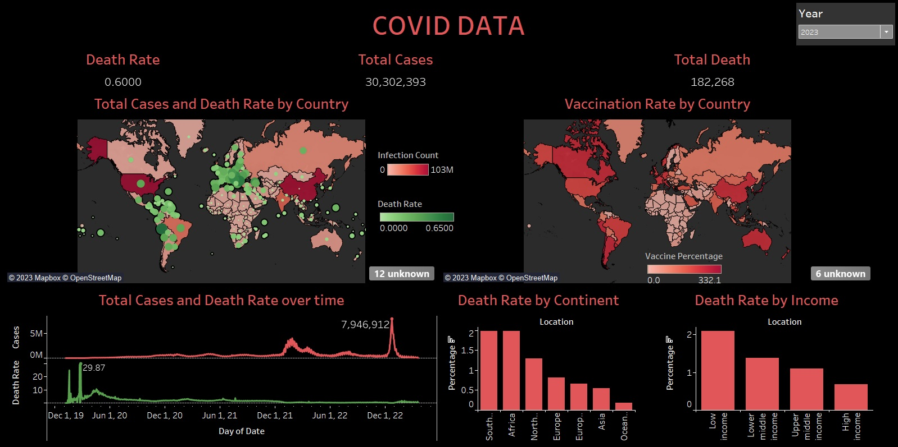
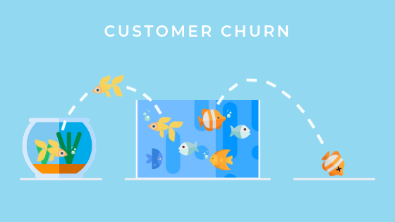

Analysis of Covid Infection Cases, Deaths and Vaccination during 2020-2023 from data downloaded from Our world in data
This project used SQL for data extraction and data analysis to answer some key questions such as how infectious Coronavirus is, the difference in the death rate of Covid in different countries and how efficient the vaccination caimpaign in countries across the world. Tableau was used for visualization.


Customer Churn has become a serious problem for any company. In this analysis, with the available data about customer demographics, location, services and current status, my purpose is to identify the importance of churn customers on a company's performance in general, total revenue and monthly charge in particular, important factors that can be key drivers of customer churn. Python is the main language for this project.

As an R1 Carnegie Research University, the University of Nevada-Reno prioritizes research and invests in facilities, faculty, and areas of study. Analyzing awards by unit, cost center, PI, and year can help identify areas that require more attention and investment to expand research opportunities for faculty and students. Recognizing PIs with awards can also encourage continued contributions to the university's research and the wider world.

Kaggle is the world's largest community of data scientists. This analysis using Python is to explore people in United States using Kaggle for their data science learning and working journey from 2017-2019.
The database is designed to keep track of job proposals, work orders, labor and materials attributed to a job for a subcontracting company. Project uses Microsoft SQL Server for data storing.